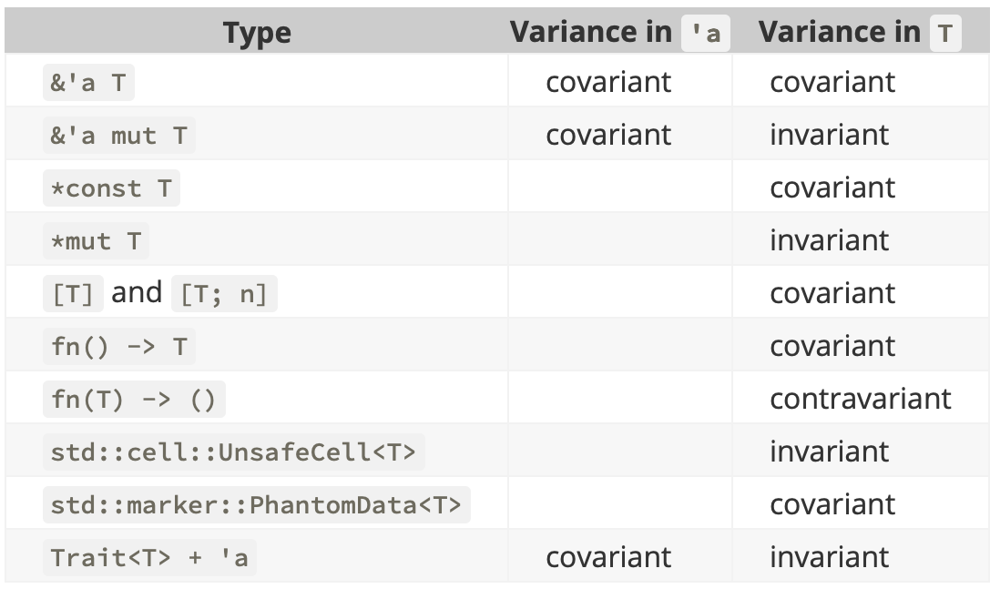

Programmation par Traits
sous l'influence de la gestion mémoire
Montpellier Rust Meetup

| Freelance + OSS |
| Computer scientist |
"Language Addict"
- Prolog, OCaml, C/C++, Perl
- Java, Javascript, Python
- Scala, Haskell, Go
- Swift, Kotlin, Rust
- et les miens !
- “zero cost abstractions”
- Pas de ramasse miette
- Richesse du typage
- Fonction d'ordre supérieur
- Pattern Matching
- Polymorphisme paramétrique
- Concept de trait
- Polymorphisme ad-hoc
- "Typeclasses" à la Haskell
Principes abordés
Type énuméré & Structure
Spécification de trait
Implementation de trait
Ownership, Borrowing et Lifetime
Petits rappels
Enumeration
enum Option<A> {
Some(A),
None
}
Pattern Matching
let o = Some(1)
match o {
Some(a) => print!("A pour valeur {}", a),
None => print!("Aucune valeur associée")
}
Non extensible
Structure
struct MyStruct(String);
let MyStruct(s) = my_struct; // Pattern matching "simple"
struct MyStruct {
source: String
};
let MyStruct { source } = my_struct; // Pattern matching
let source = my_struct.source // Accès direct par nom
Trait
trait MyTrait {
fn new(source: String) -> Self;
fn description(&self) -> String;
}
Implementation de Trait 1/2
impl MyTrait for MyStruct {
fn new(source: String) -> Self { // Self ≡ MyStruct
MyStruct { source }
}
fn description(&self) -> String {
"MyTrait(...)".to_string()
}
}
Implementation de Trait 2/2
impl MyTrait for String {
fn new(source: String) -> Self {
source
}
fn description(&self) -> String {
self.clone() // Borrowing ⇒ Ownership
}
}
Execution 1/2
fn main() {
let object : MyStruct = MyTrait::new("test".to_string());
let description = object.description(); // "MyStruct(...)"
...
}
fn main() {
let object : String = MyTrait::new("test".to_string());
let description = object.description(); // "test"
...
}
Execution 2/2
fn main() {
let object = MyStruct { source: "test".to_string() };
let description = object.description(); // "MyStruct(...)"
...
}
fn main() {
let object = "test".to_string();
let description = object.description(); // "test"
...
}
Passage à la pratique
∀ A ⇒ String → (Success<A>|Reject)
REX Parser combinateur 😒
Stage #1 - Code Review
L'approche naïve
Problèmes ouverts
- Clonage de chaîne
- ↳ Ownership à l'exécution i.e. parse
- Utilisation de Box
- Couplage fort structure et comportement
Stage #2 - Code Review
Zéro copie !
Ownership ⇒ Borrowing
Problèmes ouverts
- Utilisation de Box
- Couplage fort structure et comportement
- Impossible de capturer un fragment
Stage #3 - Live Coding
Elimination des Box
Polymorphisme Paramétrique
Problèmes ouverts
- Couplage fort structure et comportement
- Impossible de capturer un fragment
Stage #4 - Live Coding
Découplage structure/comportement
Multiplication des Traits
Problème ouvert
- Impossible de capturer un fragment
- ↳ Pas de Lifetime à l'exécution i.e. parse
Stage #5 - Live Coding
Permettre le Capture de fragment
Borrowing avec Lifetime explicite
Stage #6 - Live Coding
Opérer la capture de fragment
"Expression Problem" partiel
Basic benchmarks
| #1 | 3 M/s |
|
Box | Ownership |
| #2 | 51 M/s |
|
Box | Borrowing |
| #3 | 77 M/s |
|
No Box | Borrowing |
| #4 | 77 M/s |
|
No Box | Borrowing |
| #5 | 77 M/s |
|
No Box | Borrowing + Lifetime |
| #6 | 1260 M/s |
|
No Box | Borrowing + Lifetime |
D'autres types à explorer
Conclusion
Test Driven Design
Domain Driven Design
...
Memory Driven Design ?
Type Driven Design !